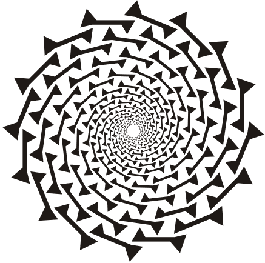

In what concerns the continuous evaluation solving exercises grade during the semester, you should submit until 23:59 of October 11th
(this exercise will still be available for submission after that deadline, but without couting towards your grade)
[to understand the context of this problem, you should read the class #01 exercise sheet]

Imagine the following number spiral (starts on 01 and goes in increasing order):
| +--+--+--+--+--+--+
| +2 |21|22|23|24|25|26|
| +--+--+--+--+--+--+
| +1 |20|07|08|09|10|27|
+--+--+--+--+--+--+
Y 0 |19|06|01|02|11|28|
+--+--+--+--+--+--+
| -1 |18|05|04|03|12|29|
| +--+--+--+--+--+--+
| -2 |17|16|15|14|13|30|
| +--+--+--+--+--+--+
...
-2 -1 0 +1 +2 +3
------- X --------
Suppose you have a coordinate system (X,Y) as shown, where the origin is the number 01. Using this, we can say 01 is at position (0,0), 02 is at position (1,0), 03 at position (1,-1), 04 at position (0,-1), 05 at position (-1,-1), and so on.
Given a sequence N, can you compute its coordinates (X,Y) on the number spiral?
The input has a single line containing N, the number to consider.
A single line containing (X,Y), the coordinates of the number on the spiral, as described before.
The following limits are guaranteed in all the test cases that will be given to your program:
| 1 ≤ N ≤ 1014 | The number to consider |
| Example Input 1 | Example Output 1 |
5 |
(-1,-1) |
| Example Input 2 | Example Output 2 |
26 |
(3,2) |